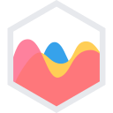
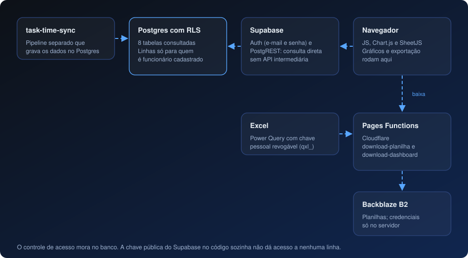

Estudo de caso
Quimia Dashboard — acesso protegido no banco, sem servidor próprio
Dashboard estático que o navegador consulta direto no Postgres, com acesso controlado por Row Level Security.
Stack
 JavaScript (vanilla)
JavaScript (vanilla)
Chart.js- Supabase (Auth + PostgREST)
 PostgreSQL RLS
PostgreSQL RLS Cloudflare Pages Functions
Cloudflare Pages Functions- Backblaze B2
- SheetJS
Contexto
O time precisava ver tarefas e horas por pessoa e do projeto inteiro. Os dados já chegavam ao Postgres por um pipeline separado (o task-time-sync), então o painel podia ser somente de leitura.
Problema
Entregar um painel simples de hospedar (sem servidor, sem build) sem expor dados a quem não deveria ver, e ainda integrar com o Excel que o time usa.
Decisões
- Sem servidor e sem API intermediária. O navegador fala direto com o Supabase (Auth por e-mail e senha e PostgREST). Agregações, gráficos e exportação rodam no navegador. São 3 dependências de frontend e nenhuma etapa de build.
- Segurança no banco, não no site. A chave pública do Supabase no código é pública por definição e sozinha não dá acesso. Políticas de Row Level Security liberam linhas só para quem está logado e cadastrado como funcionário; sessões anônimas e e-mails não cadastrados veem zero linhas.
- Regras de negócio explícitas. Tarefas com vários responsáveis aparecem na lista de cada pessoa e uma vez na tabela do projeto; subtarefas ficam recolhidas sob a tarefa pai, e a exportação é plana com uma coluna de tarefa pai; tarefas arquivadas ficam fora de tudo.
- Exportação pensada para o Excel brasileiro. CSV com
;e BOM UTF-8, para abrir certo no Excel em português, e.xlsxde verdade. - Download protegido de planilhas. Duas funções do Cloudflare Pages entregam a planilha de dados (lida pelo Excel via Power Query) e o dashboard
.xlsm. As credenciais do armazenamento nunca chegam ao navegador. Cada pessoa gera uma chave pessoal (prefixoqxl_), mostrada uma única vez, que revoga a anterior; as funções devolvem 401 com o cabeçalho certo só quando o Excel precisa pedir credenciais, para o navegador não abrir uma caixa de login. - Registro de cadastros não autorizados por um gatilho no banco, com e-mail e horário.

Resultado
Um painel hospedado de graça, sem servidor para manter, em que o controle de acesso mora no banco, e as planilhas chegam ao Excel por chaves pessoais revogáveis. Foram 8 tabelas consultadas e 5 migrações SQL.
Limitações e próximos passos
Só uma das políticas de RLS está versionada em sql/; as demais foram aplicadas direto no editor do Supabase e precisam entrar no repositório. Também não há notificação automática para cadastros não autorizados.